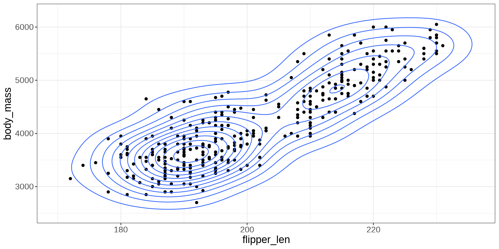

Simple Linear Regression
Modeling Relationships
Modeling Relationships
A Simple Model
Modelling Data
Linear Model
Prediction
Explaining Variation
This is the process where we try to reduce the variation with the use of other variables.
Can be thought of as getting it less wrong when taking an educated guess.
Explaining Variation

Variation with One Variable

A Simple Model
Modeling Relationships
A Simple Model
Modelling Data
Linear Model
Prediction
Generated Model
\[ Y \sim DGP_1 \]
A Simple Model

A Simple Model
\[ Y = \_\_\_ + error \]
Notation
\[ Y = \ \ \ \ \ \ \ \ \ + \varepsilon \]
The Simple Generated Model
\[ Y \sim \beta_0 + \varepsilon \]
\[ \varepsilon \sim DGP_2 \]
\(DGP_2\) is not the same as the \(DGP_1\), it is transformed due \(\beta_0\). Consider this the NULL \(DGP\).
Observing Data
\[ Y = \beta_0 + \varepsilon \]
Estimated Line
\[ \hat Y=\hat\beta_0 \]
Notation
Observed
\[ Y = \beta_0 + \varepsilon \]
Estimated
\[ \hat Y = \hat \beta_0 \]
Modelling Data
Modeling Relationships
A Simple Model
Modelling Data
Linear Model
Prediction
Indexing Data
The data in a data set can be indexed by a number.
#> bill_len bill_dep flipper_len body_mass sex year
#> 1 39.1 18.7 181 3750 male 2007Making the variable “body_mass_g” be represented by \(Y\) and “flipper_length_mm” as \(X\):
\[ Y_1 = 3750 \ \ X_1=181 \]
Indexing Data
\[ Y_i, X_i \]
Data
With the data that we collect from a sample, we hypothesize how the data was generated.
Using a simple model:
\[ Y_i = \beta_0 + \varepsilon_i \]
Estimated Value
\[ \hat Y_i = \hat \beta_0 \]
Estimation
To estimate \(\hat \beta_0\), we minimize the follow function:
\[ \sum^n_{i=1} (Y_i-\hat Y_i)^2 \]
This is known as the sum squared errors, SSE
Residuals
The residuals are known as the observed errors from the data in the model:
\[ r_i = Y_i - \hat Y_i \]
Estimation in R
Y: Name Outcome Variable of Interest in data frameDATADATA: Name of the data frame
Modeling Body Mass in Penguins
#>
#> Call:
#> lm(formula = body_mass ~ 1, data = penguins)
#>
#> Coefficients:
#> (Intercept)
#> 4207\[ \hat Y = 4207 \]
Visualize

Linear Model
Modeling Relationships
A Simple Model
Modelling Data
Linear Model
Prediction
Linear Model
The goal of Statistics is to develop models the have a better explanation of the outcome \(Y\).
In particularly, reduce the sum of squared errors.
By utilizing a bit more of information, \(X\), we can increase the predicting capabilities of the model.
Thus, the linear model is born.
Visualization


Linear Model
\[ Y = \beta_0 + \beta_1 X + \varepsilon \]
\[ \varepsilon \sim DGP_3 \]
Scatter Plot

Imposing a Line
Modelling the Data
\[ Y_i = \beta_0 + \beta_1 X_i + \varepsilon_i \]
Linear Model
\[ \hat Y_i = \hat \beta_0 + \hat \beta_1 X_i \]
Goal is to obtain numerical values for \(\hat \beta_0\) and \(\hat \beta_1\) that will minimize the SSE.
SSE
\[ \sum^n_{i=1} (Y_i-\hat Y_i)^2 \]
\[ \hat Y_i = \hat \beta_0 + \hat \beta_1 X_i \]
Fitting a Model in R
X: Name Predictor Variable of Interest in data frameDATAY: Name Outcome Variable of Interest in data frameDATADATA: Name of the data frame
Example
Y: “body_mass_g”; X: “flipper_length_mm”
#>
#> Call:
#> lm(formula = body_mass ~ flipper_len, data = penguins)
#>
#> Coefficients:
#> (Intercept) flipper_len
#> -5872.09 50.15\[ \hat Y_i = -5872.09 + 50.15 X_i \]
Interpretation of \(\hat\beta_0\)
The intercept \(\hat \beta_0\) can be interpreted as the base value when \(X\) is set to 0.
Some times the intercept can be interpretable to real world scenarios.
Other times it cannot.
Interpreting Example
\[ \hat Y_i = -5872.09 + 50.15 X_i \]
When flipper length is 0 mm, the body mass is -5872 grams.
Interpretation of \(\hat \beta_1\)
The slope \(\hat \beta_1\) indicates how will y change when x increases by 1 unit.
It will demonstrate if there is, on average, a positive or negative relationship based on the sign provided.
Interpreting Example
\[ \hat Y_i = -5872.09 + 50.15 X_i \]
When flipper length increases by 1 mm, the body mass will increase by 50.15 grams.
Prediction
Modeling Relationships
A Simple Model
Modelling Data
Linear Model
Prediction
Statistical Model
\[ \hat Y = \hat \beta_0 + \hat \beta_1 X \]
- \(X\): Input
- \(\hat Y\): Output
Prediction
Using the equation \(\hat Y\), we can give it a value of \(X\) and then, in return, a value of \(\hat Y\) that predicts the true value \(Y\).
Prediction in R
X: Name Predictor Variable of Interest in data frameDATAY: Name Outcome Variable of Interest in data frameDATADATA: Name of the data frameVAL: Value for the Predictor Variable
Example 1
Predict the body mass for a gentoo penguin.
Example 2
Predict the body mass for a penguin with a flipper length of 190.
Interpolation
Interpolation is the process of estimating a value within the range of the observed input data \(X\).
Extrapolation
Extrapolation is the process of estimating a value beyond the range of observed input data \(X\). It’s about venturing into the unknown, using what we know as a guide.
Extrapolation
Code